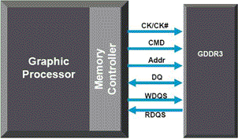
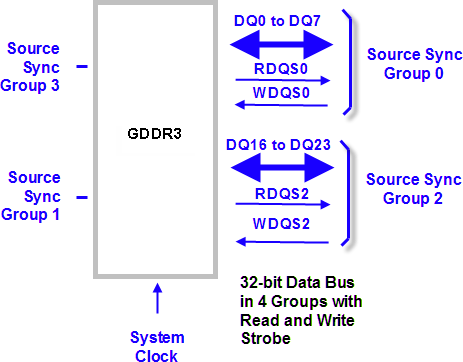

Source-synchronous class test methods
GDDR memory devices are designed to provide a very high bandwidth to transfer data in and out of the dynamic storage arrays they are built upon. High bandwidth is achieved by a high clock rate in conjunction with a wide data bus. A fast clock rate requires a tight timing of the setup and hold times in order to capture the correct data into the buffers of either the memory array or the memory controller. A 32 bit wide data bus, for example, has higher skew requirements to ensure the correct capture of all data bits at once than an eight bit wide bus has.
Skew reduction often requires that the traces of the individual data bits on the printed circuit board be tuned to equal length to reduce signal skew seen by the receiving end of a data bus. This can become costly.
To mitigate this timing related problem, memory design has introduced source synchronous interfaces. Here, data is accompanied with its own clock signal (WDQS and RDQS in the figure below). This ensures that internal logic tree timing variations will have no or next to no effect on the clock-to-data timing variation. The data clock, also called strobe, experiences the same timing variations as the data itself. To even further decrease the clock-to-data timing variation, data is configured into groups, with each group having its own strobe.
Example
An example of a source synchronous interface is shown in the figure below. The GDDR3 memory device interfaces to a memory controller within a graphic processor. The bidirectional data bus (DQ) transfers the data, the signals WDQS and RDQS are strobes clocking the data when a write or read data operation is performed. The reference clock (CK/CK#) governs the operation of the command (CMD) and address (Addr) lines. Although the read strobe timing is derived from the system clock, it can be considered a separate clock domain.

The 32 bit wide data bus is grouped into four 8-bit busses with a pair of strobes for each group. The read strobe (RDQS) is generated by the device edge aligned with the data. The write strobe (WRDQS) is generated by the controller when sending data.

Functional changes
- Introduced before SmarTest 6.3.2
- MTP 3.2.2: Adds new API SOURCESYNC_TEST.